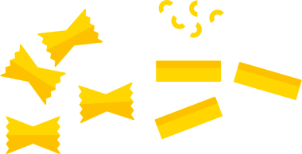
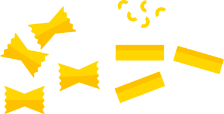
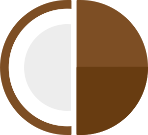
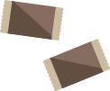
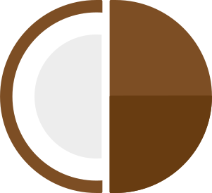
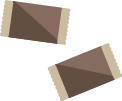

 





UPPDRAG 2.1
För att göra biogas måste man ha organiskt material som kan brytas ner. Låtsas att du är forskare och gör ett experiment som ska visa vad som är organiskt och kan brytas ner. Visa med en tankekarta hur ditt experiment ser ut. Hur kollar du vad som är organiskt och inte?
LEDTRÅD: det tar cirka 25 år för ett tuggummi att brytas ner medan en äppelskrutt bryts ner på en månad ungefär.